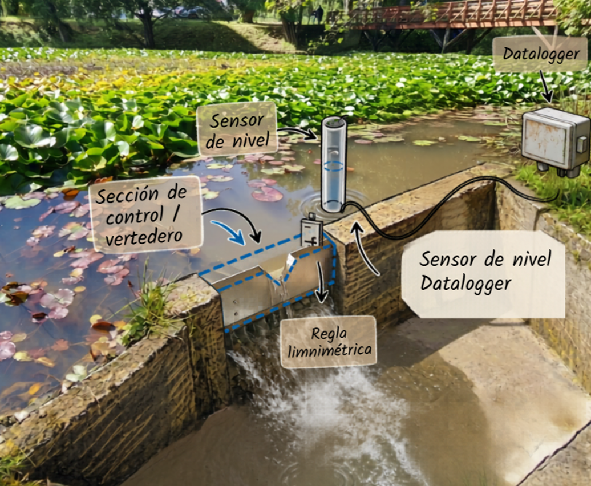

Isla Teja · Valdivia
Laguna Los Patos
Monitoreo ciudadano del humedal

Estás frente a la regla de medición de la Laguna Los Patos. Con tu lectura ayudas a construir una serie continua del nivel del agua, que la Universidad Austral y el Comité de Humedales usan para entender cómo cambia el humedal en el tiempo.
Solo necesitas leer el número en la regla. La fecha, la hora y los datos meteorológicos se registran automáticamente. El registro es anónimo.
Ingresa tu medición
Estación Isla Teja · ahora
—🌡️—Temp.
💧—Humedad
☀️—Radiación
🌧️—PP 24h
💨—Viento
🌿—ET
¡Gracias por tu aporte!
Tu medición quedó registrada en el monitoreo de la laguna.
🦆 Ver biodiversidad de la laguna Ver el monitoreo público →